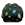
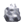
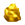
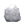
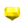
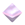
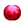
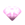

矿山石

废矿石

铜
银
金

金刚石

奥利哈钢
秘银

紫水晶

绿宝石

沙漠玫瑰石
黄玉

橄榄石
萤石

玛瑙
红宝石

翡翠
月亮石
钻石
粉红钻石

贤者之石

迷之石板

红色耀珠
全部(春夏冬)

橙色耀珠

| 名字 | 场所 | |
|---|---|---|
|  | 矿山石 |
全部 |
|
废矿石 |
全部 |
|
铜 |
1・3 |
|  | 银 |
1・3 |
|  | 金 |
1・3 |
|
金刚石 |
1・3 |
|
奥利哈钢 |
1・3 |
|  | 秘银 |
1・3 |
|
紫水晶 |
2・4 |
|
绿宝石 |
2・4 |
|
沙漠玫瑰石 |
2・4 |
|  | 黄玉 |
2・4 |
|
橄榄石 |
2・4 |
|  | 萤石 |
2・4 |
|
玛瑙 |
2・4 |
|  | 红宝石 |
2・4 |
|
翡翠 |
2・4 |
月亮石 |
2・4 | |
钻石 |
2・4 | |
|  | 粉红钻石 |
2・4 |
|
贤者之石 |
2・4 |
|
迷之石板 |
1・3 |
|
红色耀珠 |
2・4(秋) 全部(春夏冬) |
|
橙色耀珠 |
|